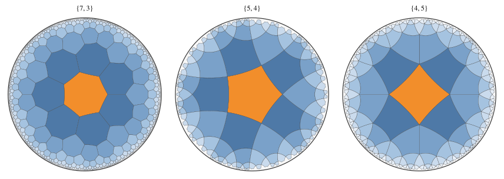

第 8 章 双曲タイリング
床のタイルのように、同じ形の図形をすき間なく重なりなく並べて平面を覆うことをタイリング（平面充填）という。ユークリッド平面を正多角形 1 種類で敷き詰める方法は 3 通りしかないが、双曲平面では無数にある。この章では、双曲平面の正多角形によるタイリングと、その作り方を説明する。
正多角形のタイリングの条件
正 \(p\) 角形を、各頂点に \(q\) 枚ずつ集まるように並べたタイリングを、シュレーフリ記号で \(\{p, q\}\) と書く。頂点のまわりに \(q\) 枚の内角が集まって 1 周するので、正 \(p\) 角形の内角は \(2\pi / q\) でなければならない。
ユークリッド平面では、正 \(p\) 角形の内角は \((p - 2)\pi / p\) に決まっている。これが \(2\pi / q\) に等しいという条件を整理すると
となり、\(p, q \ge 3\) の整数解は \(\{3, 6\}\)、\(\{4, 4\}\)、\(\{6, 3\}\) （正三角形、正方形、正六角形）の 3 通りしかない。
双曲平面では事情が異なる。第 6 章で見たように、多角形の内角の和は大きさによって変わり、正 \(p\) 角形の内角は、\((p - 2)\pi / p\) より小さい範囲で、大きさを変えれば自由に選べる。したがって、内角 \(2\pi / q\) がユークリッドの場合より小さい、つまり
を満たす \(p\)、\(q\) であれば、ちょうどよい大きさの正 \(p\) 角形を選んで \(\{p, q\}\) のタイリングが作れる。このような組は無数にある（\(\{7, 3\}\)、\(\{5, 4\}\)、\(\{4, 5\}\)、\(\{8, 8\}\) など）。
なお、\((p - 2)(q - 2) < 4\) の場合は球面のタイリングになり、\(\{3, 3\}\)、\(\{3, 4\}\)、\(\{4, 3\}\)、\(\{3, 5\}\)、\(\{5, 3\}\) の 5 通りがある。これらは正多面体（正四面体、正八面体、立方体、正二十面体、正十二面体）の面を球面に投影したものである。曲率の符号と、タイリングの条件の不等号の向きが対応している。
曲率 |
条件 |
例 |
|---|---|---|
正（球面） |
\((p - 2)(q - 2) < 4\) |
5 通り（正多面体） |
0（平面） |
\((p - 2)(q - 2) = 4\) |
\(\{3, 6\}\)、\(\{4, 4\}\)、\(\{6, 3\}\) の 3 通り |
負（双曲平面） |
\((p - 2)(q - 2) > 4\) |
無数（\(\{7, 3\}\)、\(\{5, 4\}\)、\(\{4, 5\}\) など） |
正多角形の大きさと面積
\(\{p, q\}\) の正 \(p\) 角形の大きさを求める。正 \(p\) 角形の中心 \(O\)、1 つの辺の中点 \(M\)、その辺の端の頂点 \(V\) を結ぶと、直角三角形 \(OMV\) ができる。角 \(O\) は \(\pi / p\)、角 \(V\) は内角の半分の \(\pi / q\)、角 \(M\) は直角である。
直角三角形では、第 2 余弦定理（第 6 章の式 (11)）で直角を \(\gamma\) とおくと \(\cosh c = \cot \alpha \cot \beta\) が得られる。斜辺 \(OV\) （中心から頂点までの距離 \(R\)）について
が成り立つ。条件 (13) を満たすとき、右辺は 1 より大きく、\(R\) が決まる。円板モデルでは、中心を原点に置き、頂点を半径 \(\tanh(R/2)\) の円周上に等間隔に置けば、正 \(p\) 角形が得られる。
正 \(p\) 角形の面積は、ガウス・ボネの定理（\(n\) 角形の場合）から
である。たとえば \(\{7, 3\}\) の正七角形の面積は \(5\pi - 14\pi/3 = \pi/3\)、\(\{5, 4\}\) の正五角形の面積は \(3\pi - 5\pi/2 = \pi/2\) である。
鏡映によるタイリングの作図
タイリングは、次の手順で作図できる。
原点を中心とする正 \(p\) 角形を 1 枚置く（式 (14)）。
多角形の各辺を含む測地線に関する鏡映（第 5 章）で多角形を移すと、その辺で隣り合う多角形が得られる。
新しくできた多角形についても同じ操作を繰り返す。すでにある多角形と重なるもの（中心が一致するもの）は捨てる。
鏡映は等長変換なので、移した多角形も同じ大きさの正 \(p\) 角形であり、内角が \(2\pi / q\) なので、頂点のまわりにちょうど \(q\) 枚が集まる。
29def tiling(p: int, q: int, layers: int) -> list[list[Polygon]]:
30 """{p, q} の多角形を、最初の多角形から辺を何回またぐと届くか（層）ごとに分けて返す."""
31 def key(z: complex) -> tuple[int, int]: # 同じ多角形を 2 回数えないよう、中心の座標で見分ける
32 return round(z.real * 1e7), round(z.imag * 1e7)
33
34 start = first_polygon(p, q)
35 seen = {key(start[0])}
36 result = [[start]]
37 for _ in range(layers):
38 next_layer: list[Polygon] = []
39 for center, vertices in result[-1]:
40 for k in range(p):
41 a, b = vertices[k], vertices[(k + 1) % p]
42 new_center = hg.disk_reflect(center, a, b)
43 if key(new_center) in seen:
44 continue
45 seen.add(key(new_center))
46 next_layer.append((new_center, [hg.disk_reflect(v, a, b) for v in vertices]))
47 result.append(next_layer)
48 return result
最初の多角形から、辺を何回またいで届くかを「層」と呼ぶ。この方法で描いたタイリングが図 12である。最初の多角形を橙で、それ以降の層を、遠いほど薄い青で塗った。


図 12 双曲タイリング \(\{7, 3\}\)、\(\{5, 4\}\)、\(\{4, 5\}\)
サンプルの全体：ch08_tiling.py
円板モデルの図では、境界に近い多角形ほど小さく描かれるが、双曲平面ではすべて合同な正多角形である。また、すべての頂点のまわりに、同じ枚数（\(\{7, 3\}\) では 3 枚、\(\{5, 4\}\) では 4 枚、\(\{4, 5\}\) では 5 枚）の多角形が集まっている。
層ごとの枚数
層ごとの多角形の枚数を数えると、双曲平面の指数的な広がり（第 7 章）がタイルの枚数として現れる。
{7, 3} 層ごとの枚数 [1, 7, 21, 56, 147, 385, 1008]
前の層との比 ['3.000', '2.667', '2.625', '2.619', '2.618']
{5, 4} 層ごとの枚数 [1, 5, 15, 40, 105, 275, 720]
前の層との比 ['3.000', '2.667', '2.625', '2.619', '2.618']
{4, 5} 層ごとの枚数 [1, 4, 12, 28, 64, 148, 340]
前の層との比 ['3.000', '2.333', '2.286', '2.312', '2.297']
{4, 4} 層ごとの枚数 [1, 4, 8, 12, 16, 20, 24]
正方形のタイリング \(\{4, 4\}\) では、\(k\) 層目の枚数は \(4k\) であり、層の番号に比例して増える。双曲タイリングでは、1 層進むごとに枚数がほぼ一定の倍率（\(\{7, 3\}\) と \(\{5, 4\}\) では約 2.618 倍、\(\{4, 5\}\) では約 2.3 倍）で増え、指数関数的に増加する。\(\{7, 3\}\) と \(\{5, 4\}\) の倍率は黄金比 \(\varphi = (1 + \sqrt{5})/2\) の 2 乗 \(\varphi^2 = (3 + \sqrt{5})/2 \approx 2.618\) に近づく。
エッシャーと「円の極限」
オランダの版画家エッシャーは、数学者コクセターの論文に載っていた双曲タイリングの図に触発され、1958 年から 1960 年にかけて「円の極限」と題する一連の版画を制作した。魚や天使と悪魔が円の縁に向かって限りなく小さくなりながら並ぶ構図は、円板モデルの双曲タイリングそのものである。同じ形の図形を無限に並べながら、全体を有限の円の中に収められるのは、円板モデルが双曲平面全体を円板の中に描くからである。
タイリングと曲面
双曲タイリングは、数学のほかの分野とも深く関係している。たとえば、穴が 2 つ以上ある閉じた曲面（2 人乗りの浮き輪の表面など）には、曲率が \(-1\) で一定の計量を入れることができる。そのような曲面は、双曲平面の多角形の辺どうしを貼り合わせて作れる。たとえば穴が 2 つの曲面は、内角が \(\pi/4\) の正八角形（\(\{8, 8\}\) のタイル 1 枚）の向かい合う辺を貼り合わせて作れる。この考え方は、複素関数論やトポロジー、さらに結晶学や物性物理でも使われている。
この章のまとめ
正 \(p\) 角形を各頂点に \(q\) 枚集めるタイリング \(\{p, q\}\) は、\((p - 2)(q - 2) > 4\) のとき双曲平面で実現でき、その組は無数にある。
正多角形の大きさは \(\cosh R = \cot(\pi/p) \cot(\pi/q)\) で決まる。
タイリングは、辺に関する鏡映を繰り返して作図できる。
層ごとのタイルの枚数は指数関数的に増え、双曲平面の広がりを反映する。